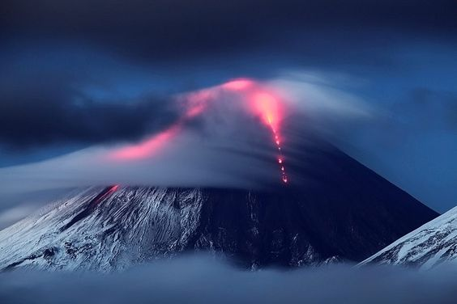
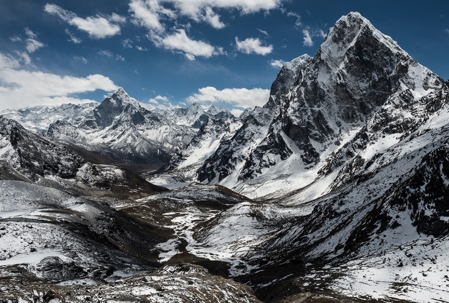
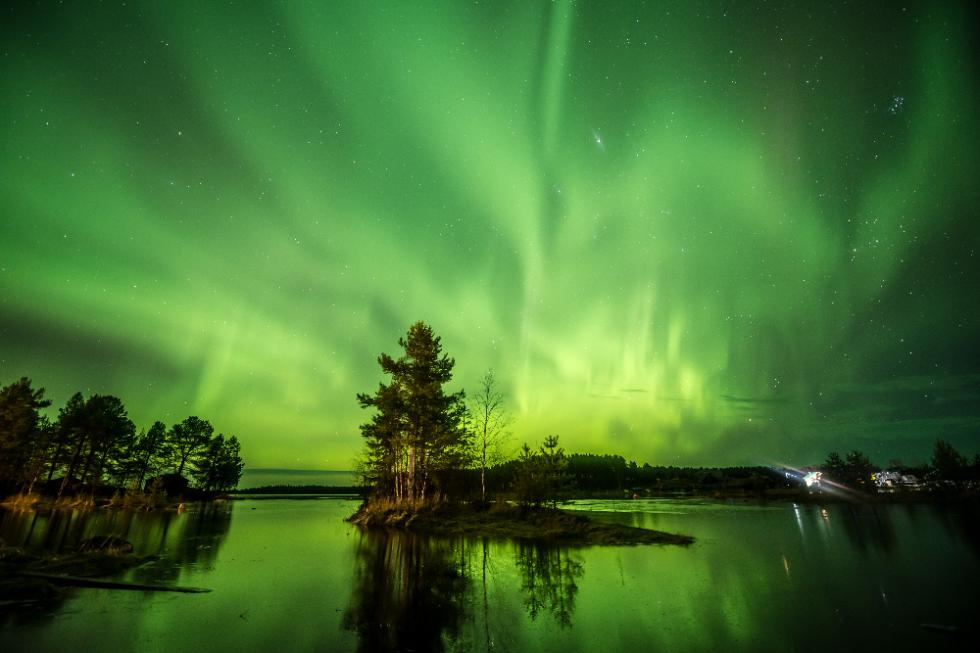
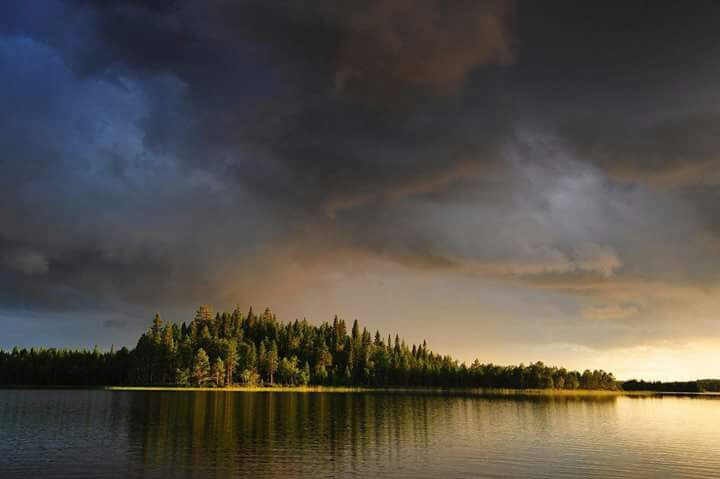

Klyuchevskaya Sopka is a stratovolcano, the highest mountain on the Kamchatka Peninsula of Russia and the highest active volcano of Eurasia. Its steep, symmetrical cone towers about 100 kilometres from the Bering Sea. The volcano is part of the natural Volcanoes of Kamchatka UNESCO World Heritage Site.
This photo in taken in the regions of the Nepalese Himalayas expedition by Ivan Dementievsky in two months. Majestic, spiritual, beautiful. It's a world on its own.
Karelia is a region in the Russian Far North, where winter lasts for almost 6 months and in December the sun barely rises above the horizon. But in this kingdom of cold and darkness there is a something that brightens the world - the magnificent aurora borealis.
Karelia is a vast region encompassing the Republic of Karelia in northwest Russia and areas of Finland across the border. It is known for its sparsely inhabited wilderness, with dense forests and numerous lakes dotted with islands. In the North Karelia region of eastern Finland, the university city of Joensuu is a gateway to rocky Koli National Park, home to ski slopes, trails and fish-filled Lake Pielinen.
